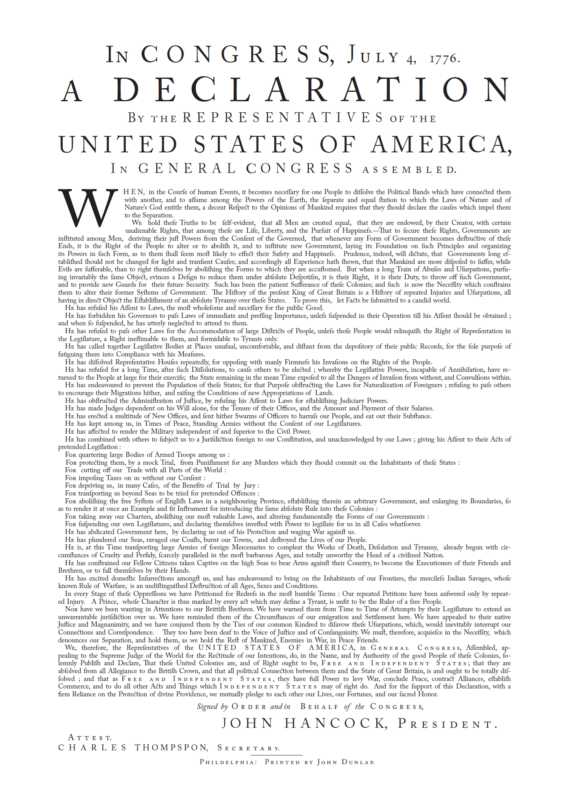
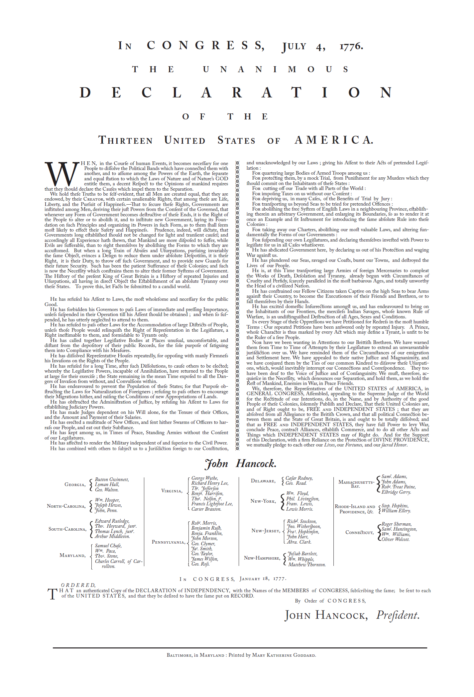
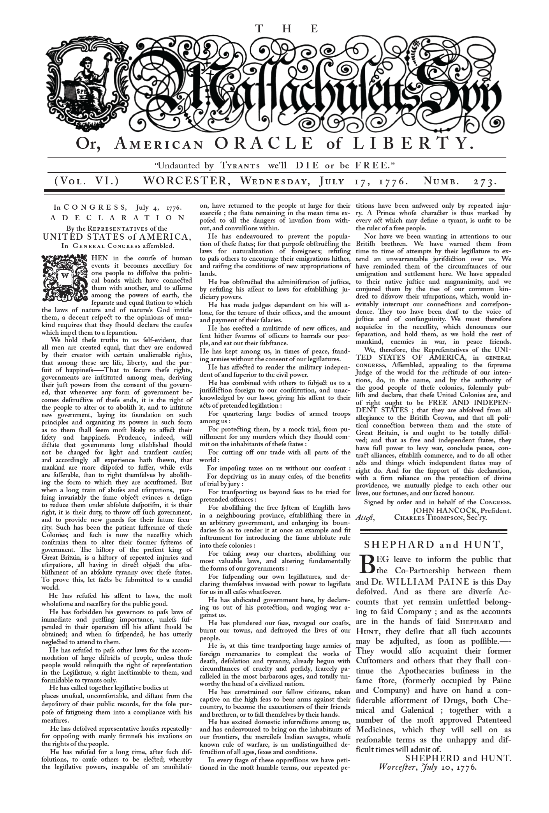
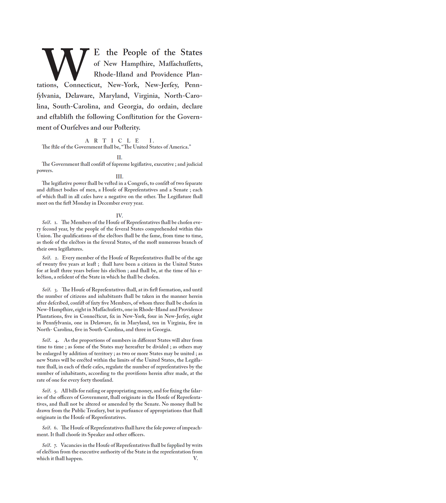
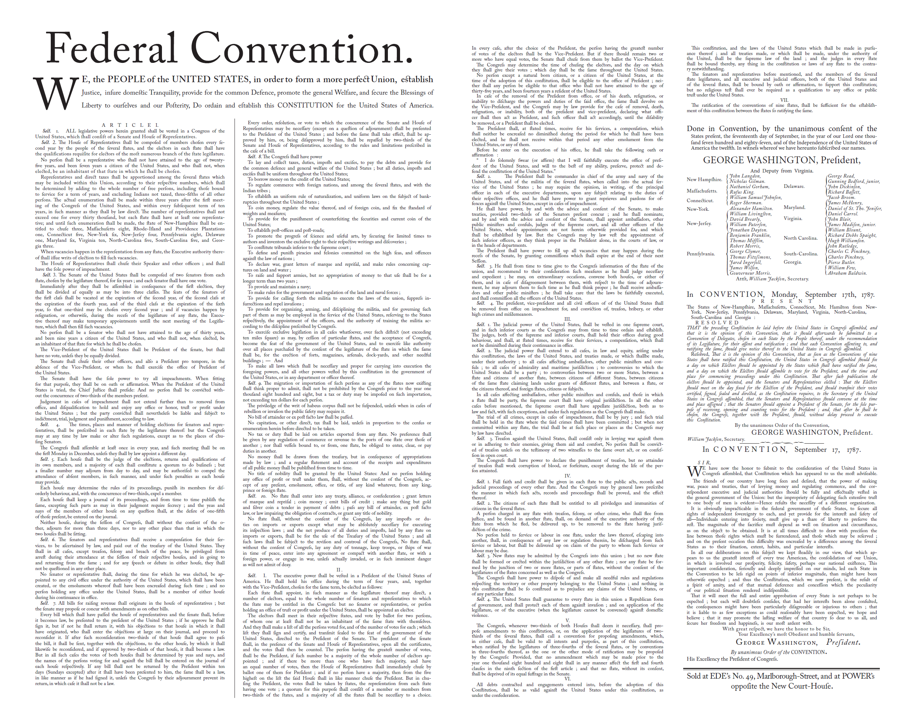
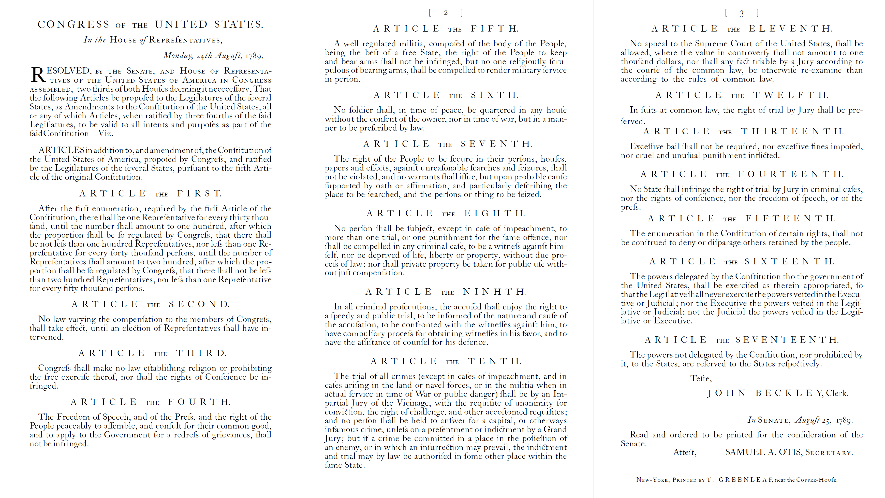
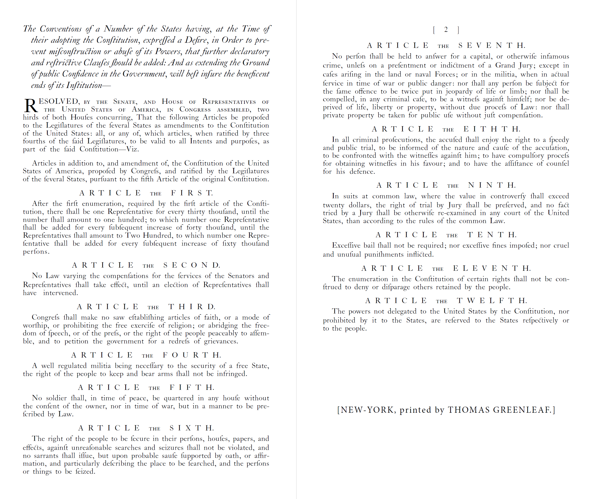
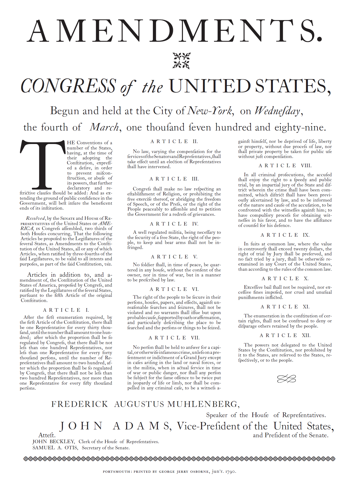

Early printings of the Founding Documents of The Unites States of America
The Declaration of Independence



The Dunlap Broadside
The Goddard Broadside
The Massachusetts Spy
The Constitution


The Secret First Draft
The First Massachusetts Printing
The Bill of Rights

House of Representative Draft

Senate Draft

First Broadside